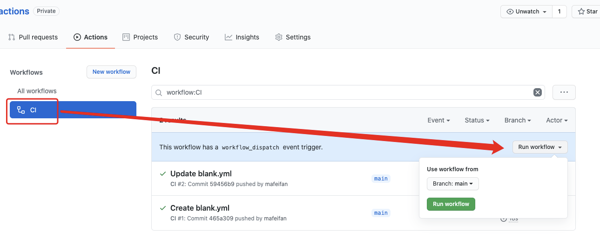
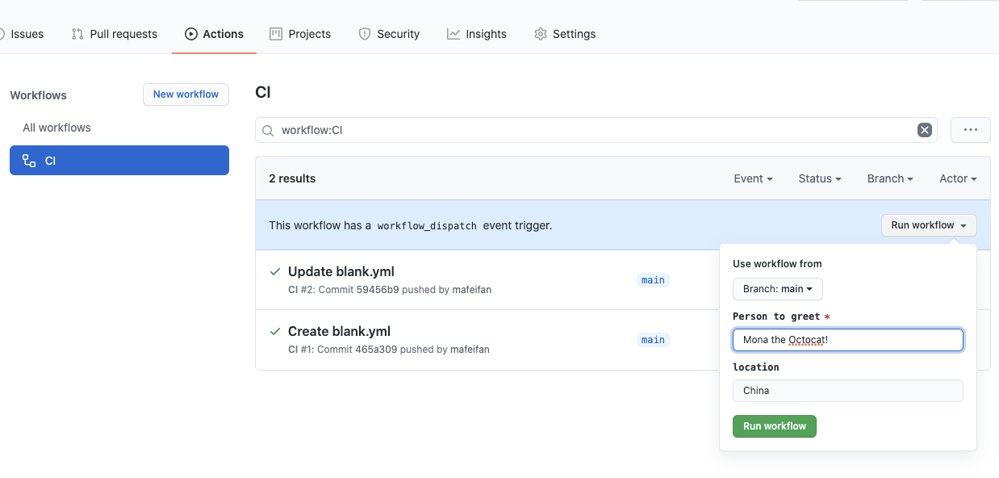
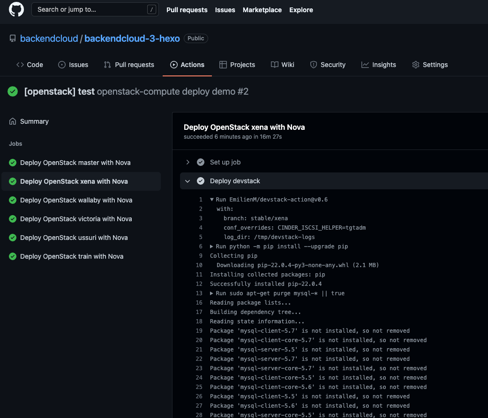
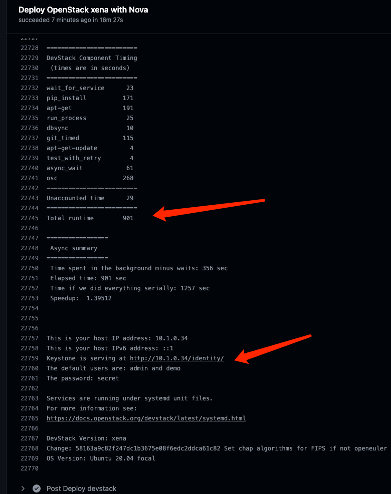

release time :2022-04-12 13:04
Restrictions on the use of Github Actions
A total usage time limit of 2000 minutes/month, a job in each Workflow can be executed for a maximum of 6 hours, a Workflow can be executed for a maximum of 72 hours, a job in a Workflow can be queued for a maximum of 24 hours in all Actions in a repository, A maximum of 1,000 API requests can be executed in one hour. Number of concurrent jobs: Linux: 20, Mac: 5.
These restrictions are sufficient for personal development. Of course, it also restricts the use of Github resources as a server. Github has the action of Github as a server. With this action, you can ssh to the Github server to use the server's computing power. Github's server performance is still very strong.
What is Workflow
A Workflow is a configurable automated process consisting of one or more jobs. You can customize the name, and the Github Action page will display the customized name, otherwise use the default naming method.
on can define the name of the event that triggers the execution of Workflow. Below are the two most commonly used.
// single event
on: push
// multiple events
on: [push,pull_request]
What is a Workflow job? And how to share data between different jobs
A Workflow consists of one or more jobs, which means a continuous integration operation that can complete multiple tasks. Github tasks are called steps, and a step can have multiple actions.
Because a job corresponds to a continuous integration. Different jobs cannot share data. The workflow defined by hexo twice in ci.yaml above is a single job. Github executes multiple jobs in parallel by default.
The job must define the id, and the id is the key. This is different from the step. The id and name of the step are defined by the key value pair, and different steps are in the form of an array, and are executed sequentially in the order of writing. The name of the job will be displayed on the Github Action page.
jobs:
my_first_job:
name: My first job
my_second_job:
name: My second job
needs can identify whether the job depends on other jobs - if the job fails, all jobs that require the job will be skipped
jobs:
job1:
job2:
needs: job1
job3:
needs: [job1, job2]
How to share data between different jobs can share data between workflow jobs by cooperating with need to share string variables or artifacts
Cooperate with need to share string variables
jobs:
job1:
runs-on: ubuntu-latest
# Map a step output to a job output
outputs:
output1: ${{ steps.step1.outputs.test }}
output2: ${{ steps.step2.outputs.test }}
steps:
- id: step1
run: echo "::set-output name=test::hello"
- id: step2
run: echo "::set-output name=test::world"
job2:
runs-on: ubuntu-latest
needs: job1
steps:
- run: echo ${{needs.job1.outputs.output1}} ${{needs.job1.outputs.output2}}
Artifacts share data between workflow jobs
Github actions Artifact can be used to store the products produced by actions, such as static files generated by npm build. After the upload is successful, the subsequent process can download these files for use.
One of the jobs is to upload files to Github actions Artifact, use actions/upload-artifact@v2
- uses: actions/upload-artifact@v2
with:
name: agileconfig-ui
path: xxx/yyy/
Another job needs a job that needs to upload files, use uses actions/download-artifact@v2
- uses: actions/download-artifact@v2
with:
name: agileconfig-ui
path: aaa/bbb
Github actions Artifact can not only share files with different jobs, but also manually download files to Github Action, such as compiling and packaging files.
Define environment variables
Job defines environment variables
jobs:
job1:
env:
FIRST_NAME: Mona
step defines environment variables
steps:
- name: Print a greeting
env:
MY_VAR: Hi there! My name is
FIRST_NAME: Mona
MIDDLE_NAME: The
LAST_NAME: Octocat
run: |
echo $MY_VAR $FIRST_NAME $MIDDLE_NAME $LAST_NAME
What is a matrix?
Just sometimes, our code may have multiple compilation environments. We need to compile the dmg compressed package on macos and compile the exe executable file on windows. At this time, we can use the matrix~
For example, in the following code, we use the matrix to specify: 2 operating systems, 3 node versions.
At this time, the following code will be executed 6 times - 2 x 3 = 6! ! !
runs-on: ${{ matrix.os }}
strategy:
matrix:
os: [ubuntu-16.04, ubuntu-18.04]
node: [6, 8, 10]
steps:
- uses: actions/setup-node@v1
with:
node-version: ${{ matrix.node }}
Skip Github Actions or optionally execute CICD process
As long as the following keywords are included in the commit information, CI will be skipped and CI Build will not be triggered
[skip ci]
[ci skip]
[no ci]
[skip actions]
[actions skip]
Requirement: I don't want to trigger Github Actions build every time I commit, only when the git commit message does not contain the specified content.
Github Actions supports jobs..if (opens new window) syntax During the operation of Github Actions, we can get some current environment information, such as git submission content information, and control the execution of actions through these contents
For example, a build is only triggered when the git message does not contain wip
jobs:
format:
runs-on: ubuntu-latest
if: "! contains(github.event.head_commit.message, 'wip')"
In the same way, the following workflow indicates that the build will only be triggered if the git message contains [build], otherwise it will be skipped
jobs:
format:
runs-on: ubuntu-latest
if: "contains(github.event.head_commit.message, '[build]')"
How to manually trigger a build
By default, only push and pull request actions will trigger the build
on:
push:
branches: [ main ]
pull_request:
branches: [ main ]
The easiest way is to add workflow_dispatch action
on:
workflow_dispatch:
push:
branches: [ main ]
pull_request:
branches: [ main ]
In this way, you can see the button to execute the build on the actions page, and you can execute a manual build after selecting a branch.

on:
workflow_dispatch:
inputs:
name:
description: 'Person to greet'
required: true
default: 'Mona the Octocat'
home:
description: 'location'
required: false
jobs:
say_hello:
runs-on: ubuntu-latest
steps:
- run: |
echo "Hello ${{ github.event.inputs.name }}!"
echo "- in ${{ github.event.inputs.home }}!"

Code inspection takes bash script inspection as an example
name: shellcheck
'on':
push:
pull_request:
schedule:
- cron: '0 1 * * *'
jobs:
shellcheck:
name: shellcheck
runs-on: ubuntu-latest
steps:
- name: Check out the codebase.
uses: actions/checkout@v2
- name: Install shellcheck from GitHub releases
run: |
sudo curl -L https://github.com/koalaman/shellcheck/releases/download/v${SHELLCHECK_VERSION}/shellcheck-v${SHELLCHECK_VERSION}.$(uname -s).$(uname -m).tar.xz -o shellcheck.tar.xz
sudo tar -xvf shellcheck.tar.xz
sudo mv shellcheck-v${SHELLCHECK_VERSION}/shellcheck /usr/local/bin/shellcheck
sudo chmod 755 /usr/local/bin/shellcheck
shellcheck --version
env:
SHELLCHECK_VERSION: 0.7.2
- name: Shellcheck!
run: |
shellcheck <code path>
shellcheck <code path>
GitHub Actions Build Android
name: android_build
on:
workflow_dispatch:
jobs:
build:
runs-on: ubuntu-latest
steps:
- name: Checkout the code
# 拉取 android_builder 的源代码
uses: actions/checkout@v2
- name: Set up JDK
# 设置 Java 运行环境
uses: actions/setup-java@v1
with:
java-version: 1.8
# 用 1.8 版本覆盖环境中自带的 Java 11 版本
- id: get-project
# 读取项目地址
name: Get project name
run: echo "::set-output name=PROJECT::$(cat project-to-build)"
- name: Clone project
# 拉取项目源码到虚拟环境
run: git clone --depth=1 ${{ steps.get-project.outputs.PROJECT }} project
- name: Build the app
# 构建调试版 APK
working-directory: ./project
run: |
if [ ! -f "gradlew" ]; then gradle wrapper; fi
chmod +x gradlew
./gradlew assembleDebug --stacktrace
- name: Upload APK
# 打包上传生成的 APK 到的网页端
uses: actions/upload-artifact@v2
with:
name: my-build-apk
path: ./**/*.apk
Docker build image and push to Docker Hub
Go to https://hub.docker.com/settings/security to generate an access token, and remember it well. Then open Github to Settings > Secrets > New secret to add two records:
- Key name: DOCKER_HUB_USERNAME, value is the username of Docker hub
- Key name: DOCKER_HUB_ACCESS_TOKEN, the value is the access token just copied, the value is similar to c292155d-1bd7-xxxx-xxxx-4da75bedb178
name: CI to Docker Hub
on:
push:
branches: [ master ]
# tags:
# - "v*.*.*"
jobs:
build:
runs-on: ubuntu-latest
steps:
-
name: Set up Docker Buildx
uses: docker/setup-buildx-action@v1
-
name: Login to DockerHub
uses: docker/login-action@v1
with:
username: ${{ secrets.DOCKER_HUB_USERNAME }}
password: ${{ secrets.DOCKER_HUB_ACCESS_TOKEN }}
-
name: Build and push
id: docker_build
uses: docker/build-push-action@v2
with:
push: true
tags: finleyma/simplewhale:latest
build-args: |
arg1=value1
arg2=value2
-
name: Image digest
run: echo ${{ steps.docker_build.outputs.digest }}
Github Action Deploy Openstack environment
The following two examples are examples in the latest Openstack versions TX 部署nova等基本服务and部署Ironic等服务
jobs:
functional-compute:
strategy:
fail-fast: false
matrix:
name: ["master"]
openstack_version: ["master"]
ubuntu_version: ["20.04"]
include:
- name: "xena"
openstack_version: "stable/xena"
ubuntu_version: "20.04"
- name: "wallaby"
openstack_version: "stable/wallaby"
ubuntu_version: "20.04"
- name: "victoria"
openstack_version: "stable/victoria"
ubuntu_version: "20.04"
- name: "ussuri"
openstack_version: "stable/ussuri"
ubuntu_version: "18.04"
- name: "train"
openstack_version: "stable/train"
ubuntu_version: "18.04"
runs-on: ubuntu-${{ matrix.ubuntu_version }}
name: Deploy OpenStack ${{ matrix.name }} with Nova and run compute acceptance tests
steps:
- name: Deploy devstack
uses: EmilienM/devstack-action@v0.6
with:
branch: ${{ matrix.openstack_version }}
conf_overrides: |
CINDER_ISCSI_HELPER=tgtadm
jobs:
functional-baremetal:
strategy:
fail-fast: false
matrix:
name: ["master"]
openstack_version: ["master"]
ubuntu_version: ["20.04"]
include:
- name: "xena"
openstack_version: "stable/xena"
ubuntu_version: "20.04"
- name: "wallaby"
openstack_version: "stable/wallaby"
ubuntu_version: "20.04"
- name: "victoria"
openstack_version: "stable/victoria"
ubuntu_version: "20.04"
- name: "ussuri"
openstack_version: "stable/ussuri"
ubuntu_version: "18.04"
- name: "train"
openstack_version: "stable/train"
ubuntu_version: "18.04"
runs-on: ubuntu-${{ matrix.ubuntu_version }}
name: Deploy OpenStack ${{ matrix.name }} with Ironic and run baremetal acceptance tests
steps:
- name: Deploy devstack
uses: EmilienM/devstack-action@v0.6
with:
branch: ${{ matrix.openstack_version }}
conf_overrides: |
enable_plugin ironic https://opendev.org/openstack/ironic ${{ matrix.openstack_version }}
LIBS_FROM_GIT=pyghmi,virtualbmc
FORCE_CONFIG_DRIVE=True
Q_AGENT=openvswitch
Q_ML2_TENANT_NETWORK_TYPE=vxlan
Q_ML2_PLUGIN_MECHANISM_DRIVERS=openvswitch
DEFAULT_INSTANCE_TYPE=baremetal
OVERRIDE_PUBLIC_BRIDGE_MTU=1400
VIRT_DRIVER=ironic
BUILD_TIMEOUT=1800
SERVICE_TIMEOUT=90
GLANCE_LIMIT_IMAGE_SIZE_TOTAL=5000
Q_USE_SECGROUP=False
API_WORKERS=1
IRONIC_BAREMETAL_BASIC_OPS=True
IRONIC_BUILD_DEPLOY_RAMDISK=False
IRONIC_AUTOMATED_CLEAN_ENABLED=False
IRONIC_CALLBACK_TIMEOUT=600
IRONIC_DEPLOY_DRIVER=ipmi
IRONIC_INSPECTOR_BUILD_RAMDISK=False
IRONIC_RAMDISK_TYPE=tinyipa
IRONIC_TEMPEST_BUILD_TIMEOUT=720
IRONIC_TEMPEST_WHOLE_DISK_IMAGE=False
IRONIC_VM_COUNT=1
IRONIC_VM_EPHEMERAL_DISK=1
IRONIC_VM_LOG_DIR=/opt/stack/new/ironic-bm-logs
IRONIC_VM_SPECS_RAM=1024
IRONIC_DEFAULT_DEPLOY_INTERFACE=direct
IRONIC_ENABLED_DEPLOY_INTERFACES=direct
SWIFT_ENABLE_TEMPURLS=True
SWIFT_TEMPURL_KEY=secretkey
enabled_services: 'ir-api,ir-cond,s-account,s-container,s-object,s-proxy,q-svc,q-agt,q-dhcp,q-l3,q-meta,-cinder,-c-sch,-c-api,-c-vol,-c-bak,-ovn,-ovn-controller,-ovn-northd,-q-ovn-metadata-agent'


In this way, the parallel preparation of 5 or 6 latest versions of the openstack environment is automatically completed in just one meal.